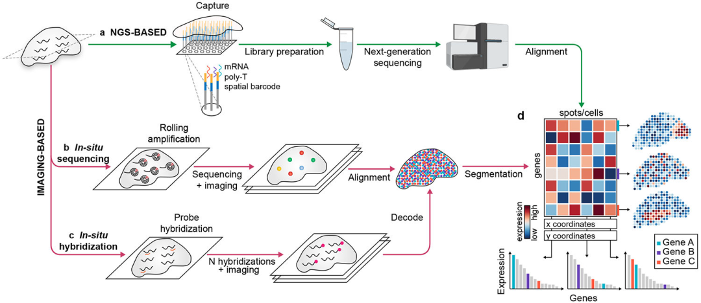
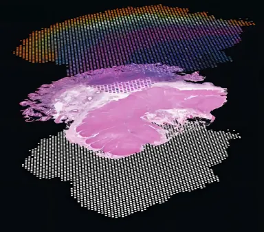
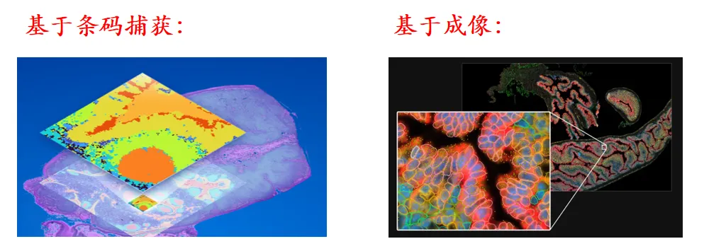
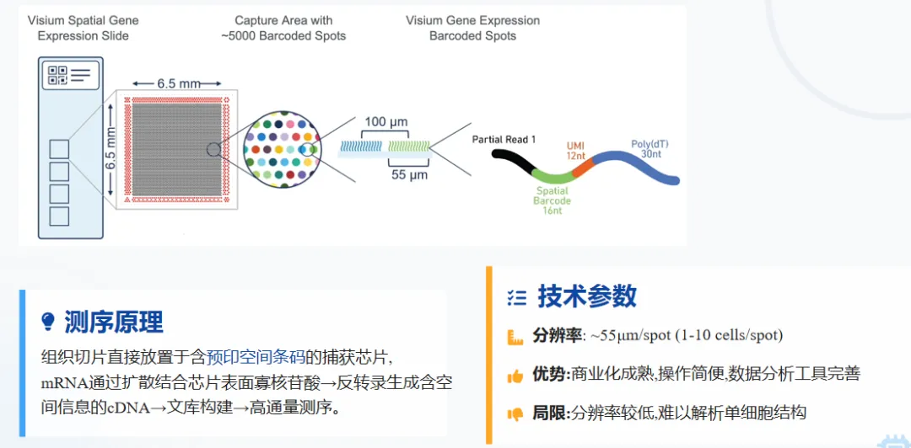
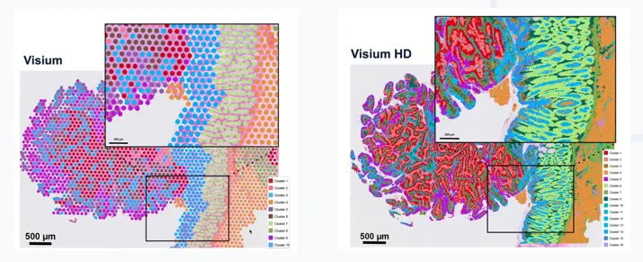
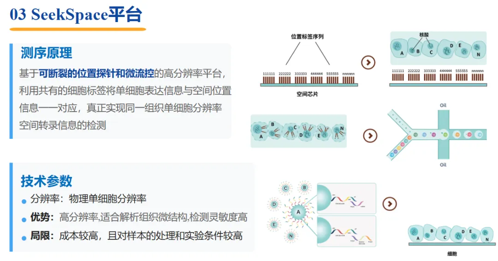
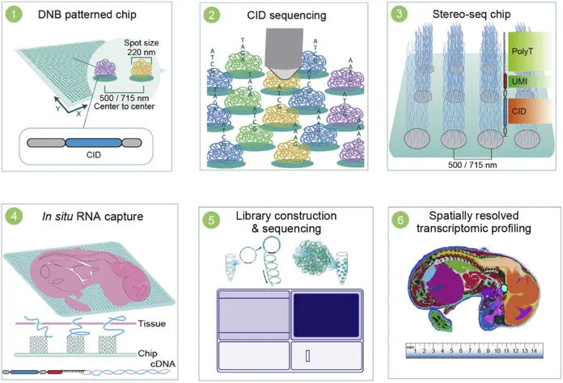
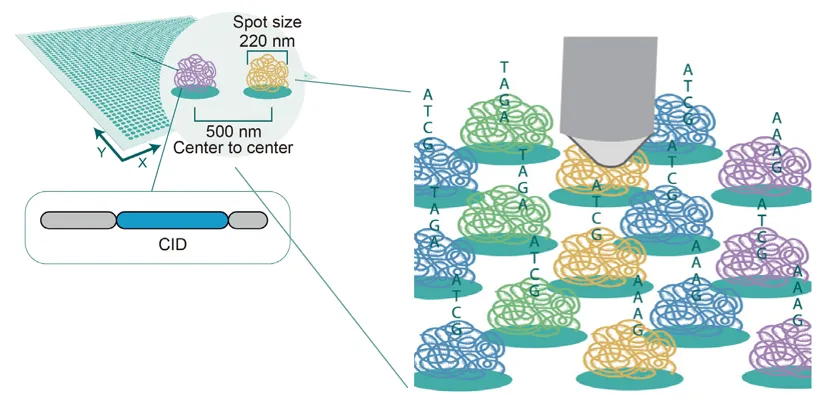
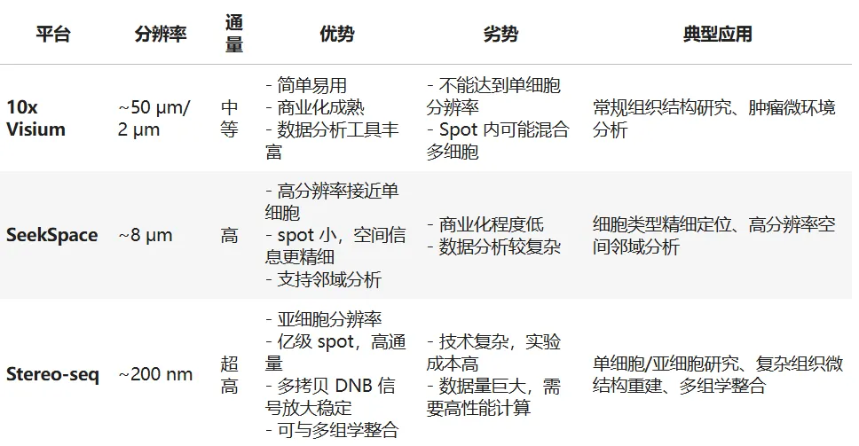

除了image和NGS-base，也许空间转录组平台该按分辨率划分：单细胞、亚细胞、多细胞
原文：https://mp.weixin.qq.com/s?__biz=MzAwMzIzOTk5OQ==&mid=2247539361&idx=1&sn=d8d15b8a3920eee01752249010cb03b4&chksm=9b3c23f1ac4baae7e3e9041fc89d5da23f8e086732e8507f68e750e80da8204057c1303a10b8#rd 合集：空间转录组
一、写在前面
此前我们在分享《Nature》空间转录组综述时学习过，空转平台可按信号测定原理分为image和NGS-base，但站在应用端，也许我们更应该关注空转平台的分辨率，划分为单细胞、亚细胞、多细胞，更有利于我们挑选符合自己课题设计的平台。

空间转录组学是一种能够在组织空间上下文中同时分析基因表达的方法，为理解组织结构、细胞类型分布和细胞互作提供了新的视角。

本文将介绍：空间转录组概述（主要是阐述发展历程、技术分类、平台对比）和上游测序数据定量 （主要介绍三大平台10x Visium、 SeekSpace、Stereo-seq软件安装、定量实操、读取andata对象等手把手教你学会上游定量分析）
如果你想彻底吃透空间转录组全套内容、跟着老师系统学习，可以报名参加我们的课程：Python空间转录组数据分析

二、空间转录组概述
2.1 背景与发展历程
- 传统转录组学
1、bulk RNA-seq：平均化了组织内所有细胞的表达信息
3、组织结构与功能密切相关
4、需要保留细胞在组织中的空间位置
- 发展历程
1、早期：基于原位杂交（ISH/FISH）
2、高通量空间捕获技术：10x Visium、Slide-seq
3、高分辨率方法：MERFISH、seqFISH+
4、多组学整合：空间转录组 + 单细胞RNA-seq + xxx

2.2 常见技术分类
| 类别 | 方法 | 特点 | 分辨率 |
|---|---|---|---|
| 基于条码捕获 | 10x Visium、Slide-seq、SeekSpace、Stereo | 高通量，覆盖整个组织 | ~50-100 μm |
| 基于成像 | MERFISH、seqFISH+ | 单细胞/亚细胞级别，高分辨率 | <1 μm |
 |
2.3 分辨率划分的平台代表
2.3.1 10x Visium(多细胞分辨率)
1、组织制备：组织切片（一般 5-10 μm），固定于Visium空间条码芯片上
2、染色与成像：H&E染色，获取组织图像
3、RNA捕获：组织切片上mRNA被芯片上的空间条码捕获
4、cDNA 合成与测序文库构建
5、高通量测序：生成空间基因表达矩阵
6、初步分析：图像对齐、空间坐标匹配
7、优势：全转录组、大片组织覆盖、兼容临床 FFPE、成本低、适合宏观组织图谱

目前10x Visium已经推出HD版本，精度可以达到 2×2 μm大小的spot

可以看出分辨率简直天差地别
2.3.2 SeekSpace（单细胞分辨率：高通量条码捕获 + 空间分辨率优化）
1、组织切片：固定并贴附于高密度条码芯片
2、高分辨率 RNA 捕获：每个 spot 更小（如 8 μm bin）
3、cDNA 文库构建：优化 PCR 扩增，保证高灵敏度
4、测序：生成高密度空间基因表达矩阵
5、数据预处理：
* 空间坐标映射
* 图像和表达矩阵结合
6、分析：
* 高分辨率细胞类型定位
* 空间邻域分析
7、优势：
· 分析简单、成本适中、真实还原组织微环境

2.3.3 Stereo-seq (亚细胞分辨率)
1、组织切片：固定在 DNA nanoball（DNB）芯片上
2、RNA 捕获：超高密度 DNB 条码捕获 mRNA
3、cDNA 合成与测序文库构建
4、超高通量测序：生成亿级 spot 的表达矩阵
5、数据处理：
* 空间坐标精确定位到亚细胞级
* 可进行单细胞或亚细胞分析
6、下游分析：
* 细胞类型分布
* 细胞-细胞通讯
* 组织微结构重建
7、优势：
* 极致精细、局部微区分析

Stereo-seq 的 DNA Nanoball (DNB) 技术

(1) 纳米球是什么？
- 定义： DNA nanoball（DNB）是一种高度紧密的环状 DNA 分子，通过滚环扩增（Rolling Circle Amplification, RCA）形成直径约 200–300 nm 的球状 DNA 聚合物 。
- 特点：
- 体积小，密度高 → 可以在芯片上排列得非常密集
- 每个 DNB 含有大量相同的 DNA 拷贝 → 提高信号强度
- 可附带 独特条码序列 → 精确标记空间位置
(2) 纳米球在Stereo-seq中的作用
| 步骤 | 作用 |
|---|---|
| 芯片排列 | DNB 被固定在硅片芯片表面形成超高密度阵列，每个 spot ~200 nm |
| mRNA 捕获 | DNB 上的 polyT 引物捕获组织切片的 mRNA |
| 条码定位 | 每个 DNB 携带唯一空间条码，测序后可以回溯 RNA 的空间位置 |
| 信号放大 | DNB 内含多拷贝 DNA → 测序信号强，减少测序噪声 |
(3) 相比传统平台的优势
1、超高分辨率：
* [10x Visium](<https://mp.weixin.qq.com/s?__biz=MzAwMzIzOTk5OQ==&mid=2247522444&idx=1&sn=91ddf9e2ca3fb75db3ad524fe0042fab&scene=21&token=106440264&lang=zh_CN&poc_token=HJmqw2mjCGMEC34r_0xfziZSwLozSIfG4chhS3D-#wechat_redirect>)：~50 μm
* ### [SeekSpace](<https://mp.weixin.qq.com/mp/appmsgalbum?__biz=MzAwMzIzOTk5OQ==&action=getalbum&album_id=3274738305204781059#wechat_redirect>)：~8 μm
* [Stereo-seq](<https://mp.weixin.qq.com/s?__biz=MzAwMzIzOTk5OQ==&mid=2247505686&idx=2&sn=925ce770136ec3e964b954c639eed29e&scene=21&poc_token=HKmsw2mjzWoWPjGiyFow_qQH3qySDBWd99fqWIk_#wechat_redirect>)：~200 nm → 接近单细胞甚至亚细胞级别
2、高通量：
* 单个芯片可容纳亿级 DNB spots
* 可覆盖大面积组织
3、信号稳定性：
* DNB 多拷贝 → 测序噪声低
4、灵活组合：
* 可与 scRNA-seq 或蛋白质组等多组学整合
2.4 空间转录组平台对比


如何联系我们

 留一个领取资料、开箱即用的单细胞分析镜像的微信号[Biomamba_zhushou]，方便各位随时交流。同时我们也构建了交流群矩阵，欢迎大家入群讨论。
留一个领取资料、开箱即用的单细胞分析镜像的微信号[Biomamba_zhushou]，方便各位随时交流。同时我们也构建了交流群矩阵，欢迎大家入群讨论。
大家可以阅读完这几篇之后添加给生信入门初学者的小贴士 没有检索，就没有发言权
已有生信基地联系方式的同学无需重复添加

 您点的每个赞和在看，我都认真当成了喜欢
您点的每个赞和在看，我都认真当成了喜欢